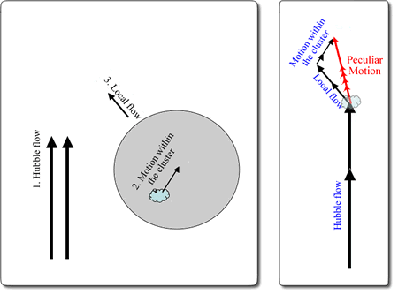

The motions of galaxies with respect to one another can be broken down into three components:
- The Hubble flow due to the expansion of the Universe,
- The motions due to the orbits of galaxies within the groups or clusters in which they reside,
- The local flows of the groups/clusters with respect to the Hubble flow
Local flows are the result of the gravitational effects of large-scale structures which cause galaxies to deviate from the local Hubble flow. The Local Group of galaxies (including the Milky Way) has a local flow of about 600 km/s in the direction of the constellation Centaurus. This is most convincingly demonstrated by the cosmic microwave background dipole, which shows clear evidence for a bulk motion of the Local Group in the direction of the galaxy superclusters that make up the Great Attractor.

The motions of galaxies can be broken down into three components: The Hubble flow, the local flow and motions within clusters. The combined local flow and motion-within-cluster constitute the ‘peculiar motion’